図解：西洋絵画の技法
空間を描く二つの遠近法
20世紀に登場した技法の早見表
| 技法 | 内容 | 使われた運動など |
|---|---|---|
| パピエ・コレ | 紙を切って糊で貼る | キュビスム |
| コラージュ | 雑多な平面素材を貼る | ダダ・シュルレアリスム・ポップ・アート |
| モンタージュ | 複数のイメージを合成 | ダダ・シュルレアリスム |
| アサンブラージュ | 廃材・既製品で立体を構成 | ダダ・ネオ・ダダ・ポップ・アート |
| オートマティスム | 無意識の状態を作品に表す | シュルレアリスム・抽象表現主義 |
| デペイズマン | 意外な組み合わせ・ずれ | シュルレアリスム |
| フロッタージュ | こすって模様を写す | シュルレアリスム |
| デカルコマニー | 絵具を押し付けて写し取る | シュルレアリスム |
| ドリッピング | 絵具をしたたらせる | 抽象表現主義 |
| シルクスクリーン | 孔版。写真から版を作れる | ポップ・アート |
| ミクストメディア | 異なる素材の併用 | 1960年代以降の美術 |
重要用語
遠近法・古典技法
- 遠近法えんきんほう平面の上に奥行きや距離感を表す技法の総称
- 一点透視図法いってんとうしずほう線遠近法の一つ
- 消失点しょうしつてん線遠近法で、奥行き方向の平行線が集まる点
- 空気遠近法くうきえんきんほう近くのものは濃くはっきりと、遠くのものは淡くぼかし、青みがかった色で描いて奥行きを表す技法
- スフマート輪郭線を用いず、色や明暗の境目を煙のようにぼかして描くレオナルド・ダ・ヴィンチの技法
- ジョルナータフレスコ画で、その日に描き終えられる範囲だけ漆喰を塗る区画
- ハッチング細い平行線を重ねて陰影や色の変化を表す技法
版画と写真
- 凸版とっぱん版の出っ張った部分にインクを付けて刷る版画
- 凹版おうはん版のへこんだ溝にインクを詰め、プレス機で刷る版画
- 平版へいはん版に凹凸を作らず、水と油の反発を利用して刷る版画
- 孔版こうはん版の穴（インクを通す部分）からインクを落として刷る版画
- エングレーヴィングビュランという彫刻刀で銅板に直接線を彫る凹版技法
- エッチング防食剤を塗った銅板を針で引っかき、酸で腐食させて溝を作る凹版技法
- カメラ・オブスクーラ暗い箱や部屋の小さな穴（レンズ）を通った光で、外の景色を壁面に映し出す装置
- ダゲレオタイプダゲールが完成させ1839年に公表された写真術
20世紀の技法
- パピエ・コレフランス語で「糊で貼り付けられた紙」
- コラージュ紙・写真・雑誌の切り抜き・紐など平坦な素材を貼り合わせて画面を作る技法
- モンタージュ異なる複数のイメージから一つの画面を合成する技法
- アサンブラージュ木片・既製品・廃材などを寄せ集めて立体の作品を構成する技法
- オートマティスム自動記述
- デペイズマン「異郷に送ること」の意
- フロッタージュ木目や葉など凹凸のある物の上に紙を当て、上から鉛筆などでこすって模様を写し出す技法
- デカルコマニー紙やガラスに塗った絵具の上に別の紙を押し付けて剥がし、偶然できた模様を写し取る技法
- ドリッピング絵具を筆で塗らず、キャンヴァスに直接したたらせたり流したりして描く技法
- シルクスクリーン孔版画の一種
- ミクストメディア異なる種類の素材を組み合わせて使う技法の総称
空間を描く：遠近法
遠近法と一点透視図法
書籍 p.261近くのものと遠くのものとの距離感や空間を表す遠近法は、絵画だけに限っても線遠近法、空気遠近法、色彩遠近法などいくつもある。基本として押さえたいのは、線遠近法の一つである「一点透視図法」と「空気遠近法」の二つである。
一点透視図法は、奥へ向かう平行線をすべて水平線上の一つの消失点に集める図法である。15世紀初めのフィレンツェで建築家ブルネレスキが実験によって原理を示し、アルベルティが『絵画論』（1435年）で理論としてまとめた。レオナルド・ダ・ヴィンチの《最後の晩餐》は最も有名な作例で、天井や壁の線がキリストの頭部に集まり、見る者の視線を中心へ導く。
 画像を拡大 ＋
画像を拡大 ＋
《最後の晩餐》
- 作者
- レオナルド・ダ・ヴィンチ
- 制作時期
- 1495〜98年頃
- 所在地・所蔵
- サンタ・マリア・デッレ・グラツィエ修道院（ミラノ）
- 素材・形式
- テンペラ・油彩・漆喰壁
出典・画像について
壁画だがフレスコではなく、乾いた壁にテンペラと油彩を併用した実験的な技法で描かれたため、早くから剥落が進んだ。
画像出典：Wikimedia Commons
Public domain
作品情報：画像出典・作品情報（Commons）
空気遠近法
書籍 p.261空気遠近法は、近くのものを濃くはっきりと、遠くのものを淡くぼかして描くことで遠近感を表す技法である。遠くの山が青みを帯びてかすんで見えるのは、間にある空気の層が光を散乱させるためで、レオナルドはこの現象を観察し、手稿にも書き残している。《モナ・リザ》の背景では、人物のすぐ後ろの岩山から遠くの山並みへ行くほど、色が青く淡くなっていく。

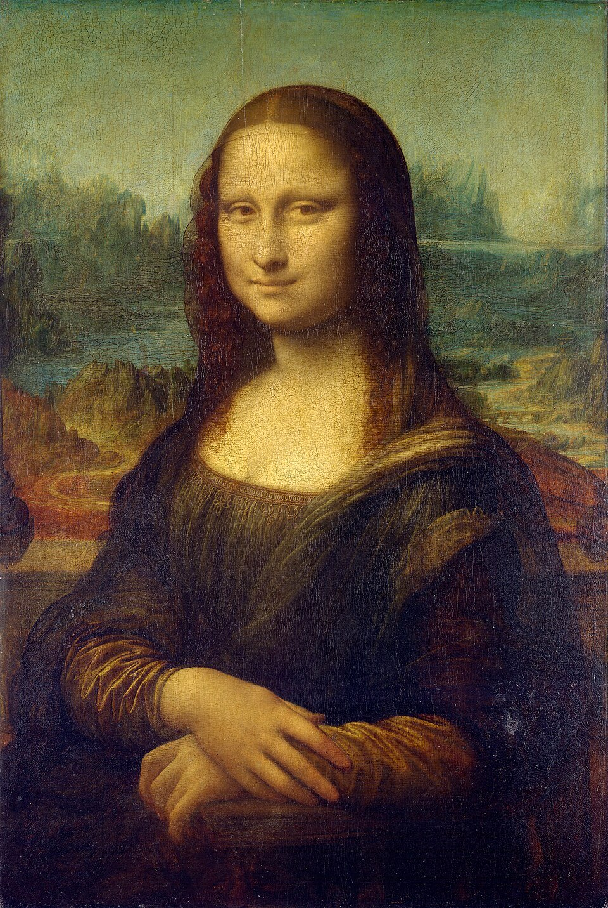
画像を拡大 ＋《モナ・リザ》
- 作者
- レオナルド・ダ・ヴィンチ
- 制作時期
- 1503〜06年頃（その後も加筆）
- 所在地・所蔵
- ルーヴル美術館（パリ）
- 素材・形式
- 油彩・板（ポプラ材）
出典・画像について

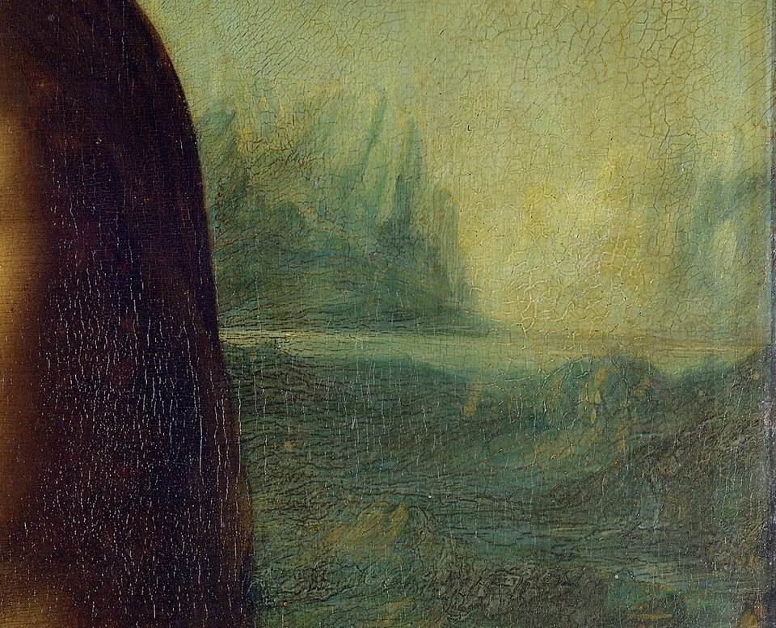
画像を拡大 ＋《モナ・リザ（背景の部分拡大）》
- 作者
- レオナルド・ダ・ヴィンチ
- 制作時期
- 1503〜06年頃
- 所在地・所蔵
- ルーヴル美術館（パリ）
- 素材・形式
- 油彩・板
出典・画像について
混同に注意 輪郭線を使わず、色の境目を煙のようにぼかして立体感を出すレオナルドの技法はスフマートと呼ばれる。空気遠近法は「遠近感」、スフマートは「ぼかしによる柔らかな肉付け」の技法で、目的が異なる。
壁画と板絵の技法
フレスコとテンペラの違い
書籍 p.261フレスコの語源は、イタリア語で「新鮮な」という意味の fresco である。画面の下地の漆喰が乾かないうちに、水で溶いた顔料で描く。乾く過程で顔料が漆喰にしみ込んで一体となり、堅牢な画面ができあがる。耐久性の高さから多くの壁画に用いられたが、乾いた後は描き直しができない。そのため一日に描ける分だけ漆喰を塗るジョルナータ（一日分の区画）を決めるなど、綿密な作業計画と素早く的確な技術が必要になる。フラ・アンジェリコがサン・マルコ修道院の階段の上に描いた《受胎告知》は、明るく澄んだ色調のフレスコである。
テンペラはイタリア語の「テンペラーレ（混ぜ合わせる）」に由来し、顔料を卵黄と混ぜ合わせて絵具を作る（カゼインや膠などと混ぜる場合もある）。乾くと発色が鮮やかな半光沢の画面になる。テンペラ絵具は乾くのが速いうえ、乾燥後は水に溶けなくなるため、色をぼかしたり広い面に均一に塗ったりするのが難しい。そこで細い線を重ねて陰影や色の移り変わりを表すハッチングという技法が発達した。テンペラは中世・ルネサンス期の板絵のほか、写本画やイコンにも使われている。ボッティチェッリの《ヴィーナスの誕生》は、キャンヴァスにテンペラで描かれた珍しい大画面である。

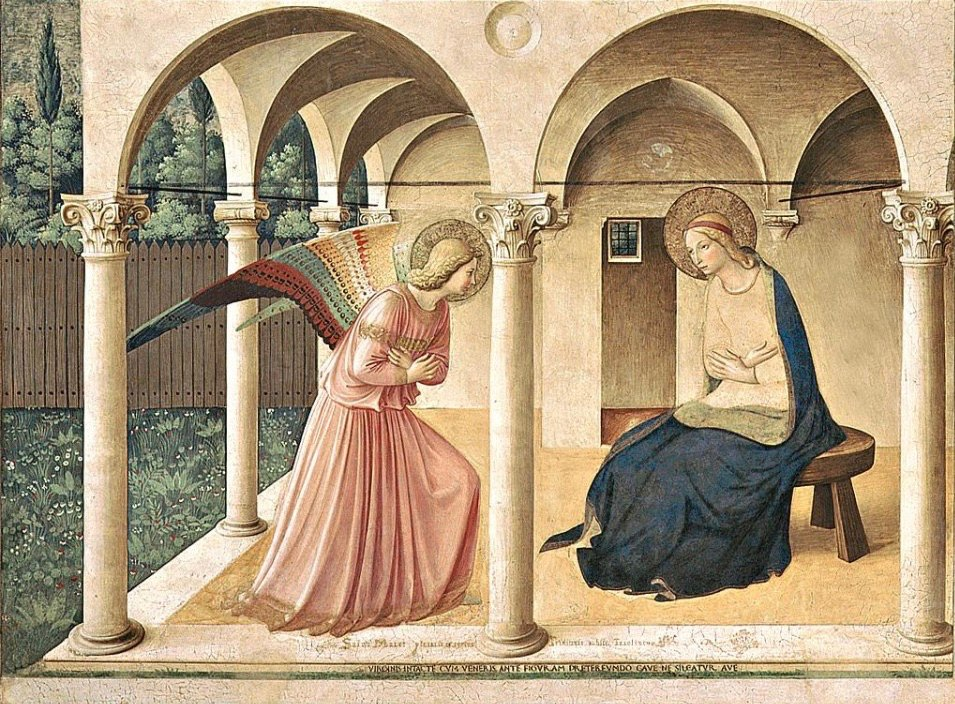
画像を拡大 ＋《受胎告知》
- 作者
- フラ・アンジェリコ
- 制作時期
- 1440年代
- 所在地・所蔵
- サン・マルコ修道院（フィレンツェ）
- 素材・形式
- フレスコ
出典・画像について

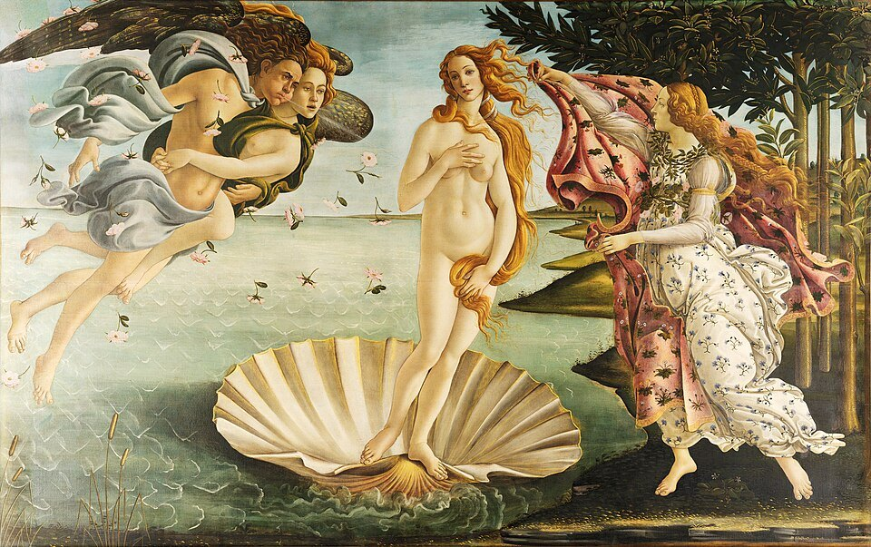
画像を拡大 ＋《ヴィーナスの誕生》
- 作者
- サンドロ・ボッティチェッリ
- 制作時期
- 1485年頃
- 所在地・所蔵
- ウフィツィ美術館（フィレンツェ）
- 素材・形式
- テンペラ・キャンヴァス
出典・画像について
| フレスコ | テンペラ | |
|---|---|---|
| 語源 | イタリア語「新鮮な」 | イタリア語「混ぜ合わせる」 |
| 描き方 | 湿った漆喰に水溶きの顔料で描く | 顔料を卵黄などで練った絵具で描く |
| 支持体 | 壁・天井（漆喰層） | 板・写本・イコンなど |
| 長所 | 漆喰と一体化し堅牢 | 発色が鮮やかな半光沢 |
| 難しさ | 乾くと描き直せない | 乾きが速くぼかしにくい→ハッチング |
版画の形式
版画の4形式
書籍 p.262木の板や金属板などに彫った図にインクを付け、紙に写し取った画像や、その技法を版画という。まったく同じ図柄を何枚も刷れることが版画の特徴で、19世紀に写真が実用化されるまでは絵画の複製として、また印刷技術の発達にともなう書物の挿絵としても大きな意味を持っていた。木版画やリトグラフなど種類は多いが、版の形式によって凸版・凹版・平版・孔版の4種類に分けられる。
| 形式 | インクが付く部分 | 主な技法 |
|---|---|---|
| 凸版 | 彫り残した出っ張り | 木版画、紙版画 |
| 凹版 | 彫ったり腐食させたりした溝 | エッチング、ドライポイント、エングレーヴィング、メゾチント |
| 平版 | 油性の描画部分（水と油の反発） | リトグラフ |
| 孔版 | 版に開いた穴を通ったインク | シルクスクリーン、ステンシル |
試験の目のつけどころ 日本の浮世絵（木版画）は凸版、銅版画は凹版。「凸＝出っ張りに付く」「凹＝溝に詰める」と、インクの位置で覚えると取り違えにくい。
作例で見る版画
書籍 p.262凹版のうち、エングレーヴィングは銅板にビュランという彫刻刀で直接線を彫り、エッチングは防食剤を塗った銅板を針で引っかいてから酸で腐食させて溝を作る。デューラーの《メランコリアI》は緻密なエングレーヴィング、レンブラントの《百グルデン版画》はエッチングにドライポイントとエングレーヴィングを組み合わせた作品である。

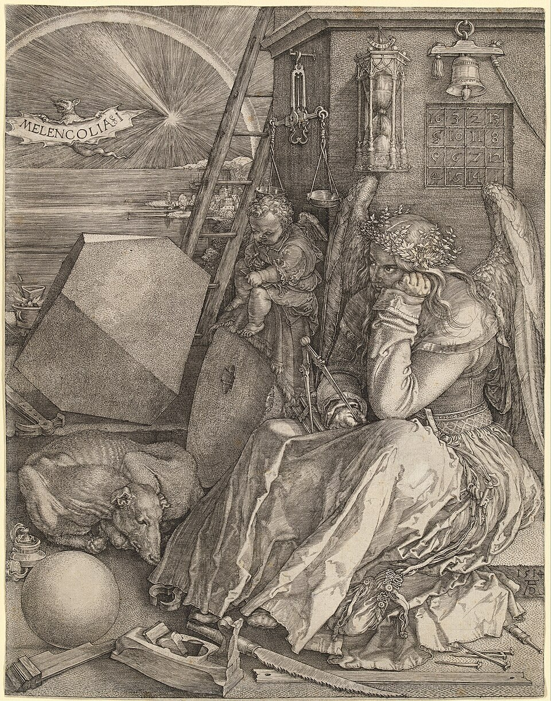
画像を拡大 ＋《メランコリアI》
- 作者
- アルブレヒト・デューラー
- 制作時期
- 1514年
- 所在地・所蔵
- 各地の美術館に刷りが現存
- 素材・形式
- エングレーヴィング（凹版）
出典・画像について

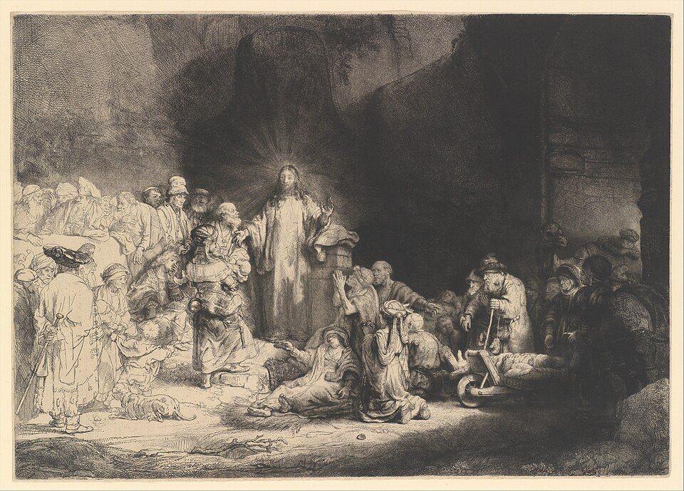
画像を拡大 ＋《百グルデン版画》
- 作者
- レンブラント・ファン・レイン
- 制作時期
- 1648年頃
- 所在地・所蔵
- メトロポリタン美術館ほか
- 素材・形式
- エッチング・ドライポイント・エングレーヴィング（凹版）
出典・画像について
画像出典：Wikimedia Commons
CC0
作品情報：画像出典・作品情報（Commons）
凸版の代表は木版画である。デューラーの《犀》は、実物を見ずに伝聞とスケッチをもとに描かれた木版画で、繰り返し刷られてヨーロッパ中に犀のイメージを広めた。平版のリトグラフは、1798年頃にドイツのゼネフェルダーが発明した。石灰石の版に油性の描画材で描き、水と油の反発を利用して刷る。トゥールーズ＝ロートレックの《ムーラン・ルージュ、ラ・グーリュ》のような多色刷りのポスターは、19世紀末の街を彩った。

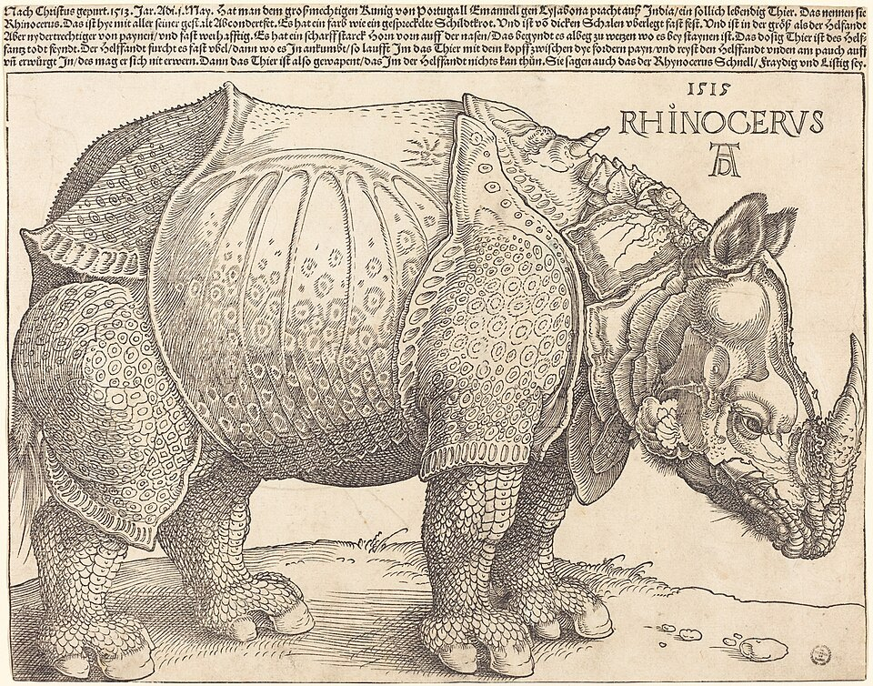
画像を拡大 ＋《犀》
- 作者
- アルブレヒト・デューラー
- 制作時期
- 1515年
- 所在地・所蔵
- ワシントン・ナショナル・ギャラリーほか
- 素材・形式
- 木版画（凸版）
出典・画像について
画像出典：Wikimedia Commons
CC0
作品情報：画像出典・作品情報（Commons）

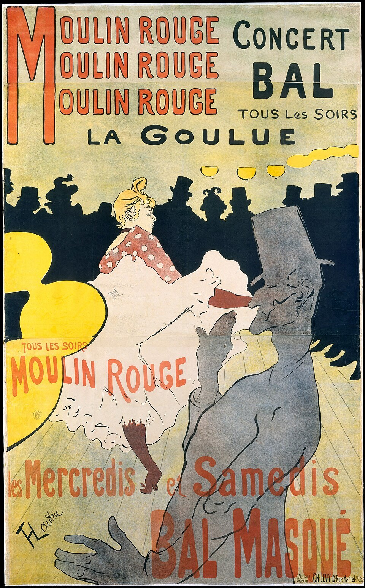
画像を拡大 ＋《ムーラン・ルージュ、ラ・グーリュ》
- 作者
- アンリ・ド・トゥールーズ＝ロートレック
- 制作時期
- 1891年
- 所在地・所蔵
- メトロポリタン美術館ほか
- 素材・形式
- 多色リトグラフ（平版）
出典・画像について
画像出典：Wikimedia Commons
CC0
作品情報：画像出典・作品情報（Commons）
孔版はインクを通す穴を版に作り、上からインクを押し出して刷る形式である。型紙を切り抜くステンシルが最も素朴な形で、日本で着物の型染めに使われた伊勢型紙もその仲間といえる。絹などの細かい網目を版にしたものがシルクスクリーンで、20世紀のポップ・アートで大きな役割を果たした（後述）。

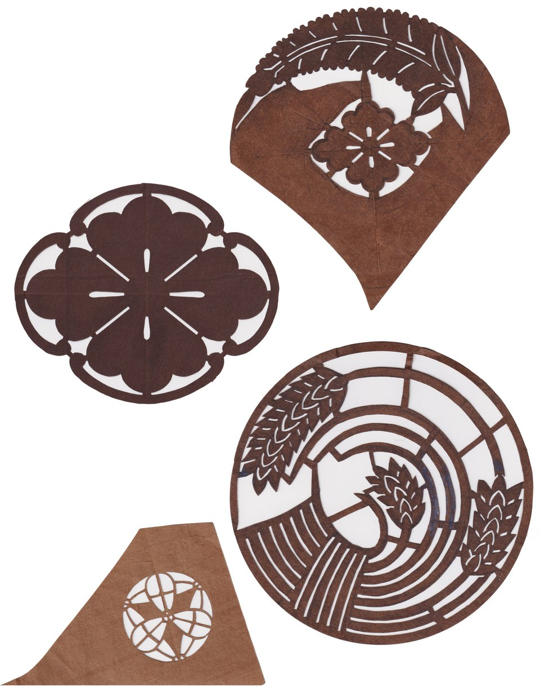
画像を拡大 ＋《伊勢型紙》
- 作者
- 作者不詳
- 制作時期
- 19世紀後半〜20世紀前半
- 所在地・所蔵
- 個人蔵
- 素材・形式
- 渋紙（孔版の型紙）
出典・画像について
写真と絵画
カメラ・オブスクーラから写真の発明へ
書籍 p.26217世紀の画家たちは、写真機の前身であるカメラ・オブスクーラを利用していた。ラテン語で「暗い部屋」を意味し、暗い箱や部屋に開けた小さな穴やレンズから入った光が、反対側の面に外の景色を逆さまに映し出す。下の図は、16世紀のゲンマ・フリシウスが日食の観測に使ったカメラ・オブスクーラの図である。フェルメールがこの装置を使ったという説もよく知られている。

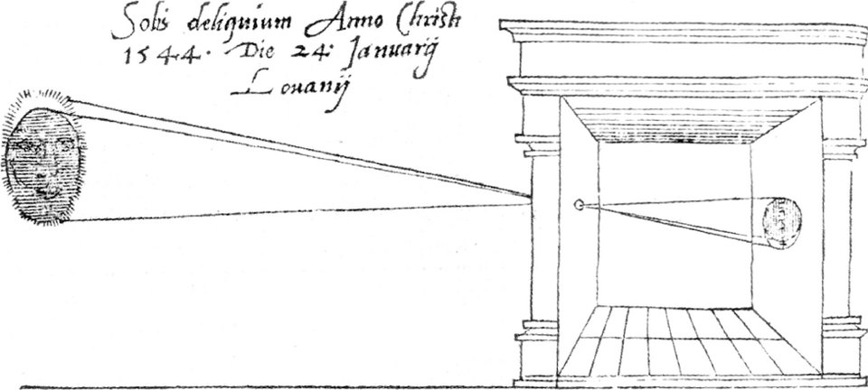
画像を拡大 ＋《カメラ・オブスクーラの図（『天文学と幾何学の光線について』より）》
- 作者
- ゲンマ・フリシウス
- 制作時期
- 1545年刊
- 所在地・所蔵
- —
- 素材・形式
- 木版挿図
出典・画像について
やがて1830年代、フランスのダゲールやイギリスのタルボットらが、像を板や紙の上に化学的に定着させる方法を完成させる。ダゲールの方法はダゲレオタイプと呼ばれ、1839年に公表された。銀メッキした銅板に直接像を作るため一点ものだった。タルボットのカロタイプは、紙のネガから何枚もプリントを作れた。《タンプル大通り》は露光に数分かかったため、動く馬車や通行人は写らず、靴を磨いてもらっている人物だけが写り込んでいる。

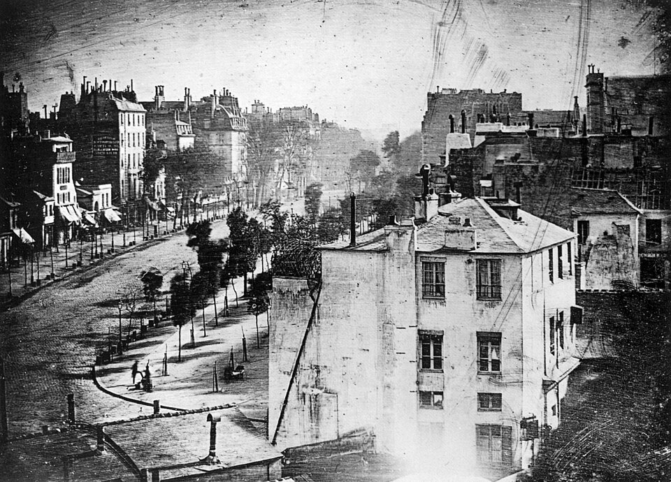
画像を拡大 ＋《タンプル大通り》
- 作者
- ルイ・ジャック・マンデ・ダゲール
- 制作時期
- 1838年
- 所在地・所蔵
- —
- 素材・形式
- ダゲレオタイプ
出典・画像について
写真が変えた画家の仕事
書籍 p.262写真の発明は画家の仕事にも大きな影響を与えた。ミニアチュールと呼ばれる小さな肖像画を描く仕事は写真に取って代わられた。写真を見ながら絵を描くことも広く行われ、テキストはアングルやドラクロワ、クールベも写真を利用したと紹介している。アングルの《泉》は、なめらかな肌の質感と理想化された裸婦像で知られる。
写真は新しいものの見方も教えてくれた。ドガは自ら写真を撮り、画面の端で人物を断ち切る構図や、一瞬の動きをとらえた人物表現に、瞬間の映像を生かした。《エトワール》では、舞台を斜め上から見下ろす視点と、舞台袖に半分隠れた人物が、スナップ写真のような臨場感を生んでいる。

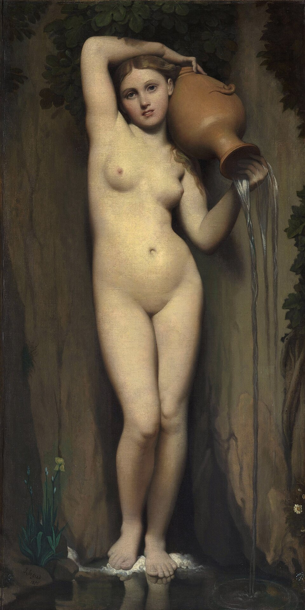
画像を拡大 ＋《泉》
- 作者
- ジャン＝オーギュスト＝ドミニク・アングル
- 制作時期
- 1856年
- 所在地・所蔵
- オルセー美術館（パリ）
- 素材・形式
- 油彩・キャンヴァス
出典・画像について

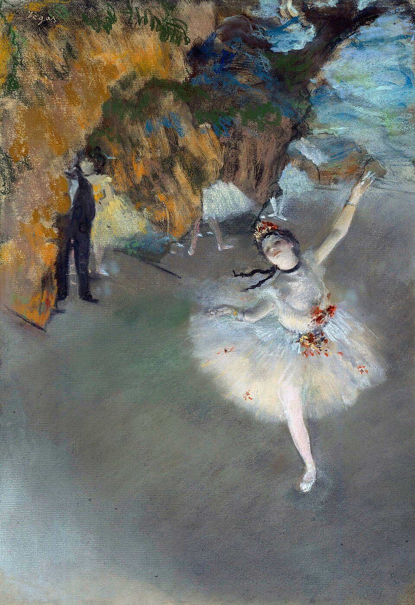
画像を拡大 ＋《エトワール（舞台の踊り子）》
- 作者
- エドガー・ドガ
- 制作時期
- 1876〜77年頃
- 所在地・所蔵
- オルセー美術館（パリ）
- 素材・形式
- パステル・モノタイプ
出典・画像について
20世紀に登場した技法
貼る・組み合わせる技法
書籍 p.262–263パピエ・コレはフランス語で「糊で貼り付けられた紙」のことで、紙、新聞紙、ボール紙などを切り、糊で貼り合わせて絵画を作る技法である。1912年頃、キュビスムのブラックとピカソが始め、フアン・グリスも取り入れた。テキストはマティスが晩年に色紙を切り貼りして作った《王の悲しみ》を挙げている。ここでは参考作品としてグリスの作例も示す。
作者は1954年没で、日本以外の多くの国で著作権の保護期間中のため画像を掲載していない。
《王の悲しみ》
- 作者
- アンリ・マティス
- 制作時期
- 1952年
- 所在地・所蔵
- ポンピドゥー・センター（パリ）
- 素材・形式
- グワッシュで彩色した紙の切り貼り
出典・画像について
著作権の保護期間中のため画像は掲載していません

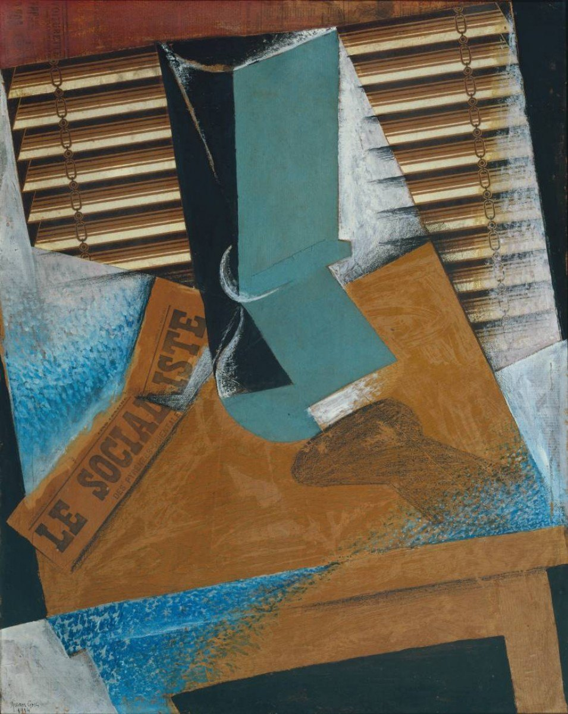
画像を拡大 ＋《日よけ》
- 作者
- フアン・グリス
- 制作時期
- 1914年
- 所在地・所蔵
- テート（ロンドン）
- 素材・形式
- グワッシュ・パピエ・コレ・木炭・キャンヴァス
出典・画像について
コラージュは、紙や写真、雑誌の切り抜き、紐といった平坦な素材を貼って二次元の画面を作る技法で、ダダやシュルレアリスム、ポップ・アートで使われた。テキストの作例は、雑誌広告の切り抜きで消費社会を皮肉ったハミルトンの作品である。ダダの時代には、シュヴィッタースが街で拾った切符や包み紙を貼り合わせて「メルツ」と名づけた作品を量産した。
作者は2011年没で、著作権の保護期間中のため画像を掲載していない。
《いったい何が今日の家庭をこれほどに変え、魅力的にしているのか？》
- 作者
- リチャード・ハミルトン
- 制作時期
- 1956年
- 所在地・所蔵
- テュービンゲン美術館（ドイツ）
- 素材・形式
- コラージュ
出典・画像について
著作権の保護期間中のため画像は掲載していません

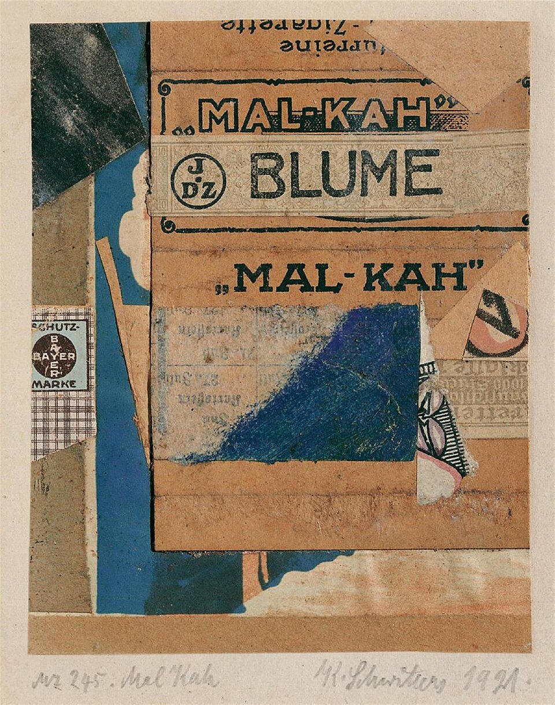
画像を拡大 ＋《Mz 245 マル・カー（メルツ素描）》
- 作者
- クルト・シュヴィッタース
- 制作時期
- 1921年
- 所在地・所蔵
- 個人蔵（競売記録による）
- 素材・形式
- コラージュ（色紙・印刷物・厚紙・色チョーク）
出典・画像について
モンタージュは、異なる複数のイメージから一つの画面を合成する技法である。写真を使うものはフォトモンタージュと呼ばれ、複数の写真を貼り合わせる方法と、撮影時の多重露光による方法がある。テキストは、建物から宙へ身を投げる姿を合成したクラインの《空中浮遊》を挙げる。複数のネガを組み合わせて一枚の写真を作る試みは19世紀からあり、レイランダーの《人生の二つの道》は32枚のネガから合成された。
作者・撮影者の著作権の保護期間中のため画像を掲載していない。
《空中浮遊（空虚への跳躍）》
- 作者
- イヴ・クライン（撮影：ハリー・シャンク、ジョン・ケンダー）
- 制作時期
- 1960年
- 所在地・所蔵
- —
- 素材・形式
- フォトモンタージュ
出典・画像について
著作権の保護期間中のため画像は掲載していません

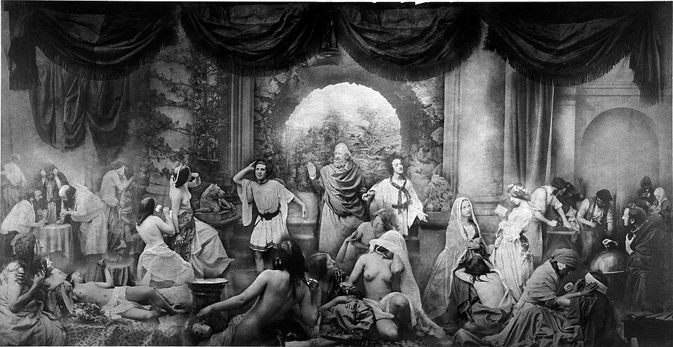
画像を拡大 ＋《人生の二つの道》
- 作者
- オスカー・ギュスターヴ・レイランダー
- 制作時期
- 1857年
- 所在地・所蔵
- —
- 素材・形式
- 合成写真（複数のネガから焼き付け）
出典・画像について
アサンブラージュは、木片や既製品、廃材などの素材を集めて立体の作品を構成する技法で、ダダ、アール・ブリュット、ネオ・ダダ、ポップ・アートで用いられた。テキストは、ピアノを壊した破片を板に貼り付けたアルマンの《ショパンのワーテルロー》を例に挙げる。
作者は2005年没で、著作権の保護期間中のため画像を掲載していない。
《ショパンのワーテルロー》
- 作者
- アルマン
- 制作時期
- 1962年
- 所在地・所蔵
- ポンピドゥー・センター（パリ）
- 素材・形式
- アサンブラージュ（壊したピアノ・板）
出典・画像について
著作権の保護期間中のため画像は掲載していません
偶然と無意識を呼び込む技法
書籍 p.263オートマティスム（自動記述）はシュルレアリスムの用語で、作家の意識下の精神状態を作品に表すことを意味する。1924年、ブルトンの『シュルレアリスム宣言』で中心的な方法とされた。戦後アメリカ絵画のドリッピングなどの技法もこれに由来する。ミロの《オランダの室内I》は、17世紀オランダの風俗画を自由に変形させた作品である。
デペイズマンは、本来あるべき場所からものを引き離す「異郷に送ること」を意味し、まったく関連性のないモチーフや、非現実的な大きさなどの意外な組み合わせで作品を構成する技法である。ロートレアモンの詩句「解剖台の上でのミシンと雨傘の偶然の出会い」がその理想とされた。マグリットの《レイプ》は、女性の顔を胴体に置き換えた衝撃的な作例である。
作者は1983年没で、著作権の保護期間中のため画像を掲載していない。
《オランダの室内I》
- 作者
- ジョアン・ミロ
- 制作時期
- 1928年
- 所在地・所蔵
- ニューヨーク近代美術館（MoMA）
- 素材・形式
- 油彩・キャンヴァス
出典・画像について
著作権の保護期間中のため画像は掲載していません
作者は1967年没で、著作権の保護期間中のため画像を掲載していない。
《レイプ（陵辱）》
- 作者
- ルネ・マグリット
- 制作時期
- 1934年
- 所在地・所蔵
- メニル・コレクション（ヒューストン）
- 素材・形式
- 油彩・キャンヴァス
出典・画像について
著作権の保護期間中のため画像は掲載していません
フロッタージュは、物の表面に紙を当て、上から鉛筆などでこすって模様を浮き出させる技法である。1925年、エルンストが床板の木目をこすり写したことから始まった。テキストの作例《石化した森》は、フロッタージュを油彩に応用し、絵具を削り取って下の凹凸を浮き出させるグラッタージュで描かれている。
デカルコマニーは、あらかじめ紙に塗った絵具の上に別の紙を押し付けてから剥がし、偶然生まれたイメージを写し取る技法である。1936年頃にドミンゲスが始め、エルンストも好んで用いた。ドリッピングは、絵具を直接キャンヴァスにしたたらせて描く技法で、床に広げた画布の上を歩きながら描いたポロックのアクション・ペインティングで知られる。
作者は1976年没で、著作権の保護期間中のため画像を掲載していない。
《石化した森》
- 作者
- マックス・エルンスト
- 制作時期
- 1927年
- 所在地・所蔵
- —
- 素材・形式
- 油彩・キャンヴァス（グラッタージュ）
出典・画像について
著作権の保護期間中のため画像は掲載していません
作者は1957年没で、日本以外の多くの国で著作権の保護期間中のため画像を掲載していない。
《無題》
- 作者
- オスカル・ドミンゲス
- 制作時期
- 1936年
- 所在地・所蔵
- —
- 素材・形式
- デカルコマニー・紙
出典・画像について
著作権の保護期間中のため画像は掲載していません
作者は1956年没で、著作権の保護期間中のため画像を掲載していない。
《ナンバー1A、1948》
- 作者
- ジャクソン・ポロック
- 制作時期
- 1948年
- 所在地・所蔵
- ニューヨーク近代美術館（MoMA）
- 素材・形式
- 油彩・エナメル・キャンヴァス
出典・画像について
著作権の保護期間中のため画像は掲載していません
シルクスクリーンとミクストメディア
書籍 p.263シルクスクリーンは孔版画の一種で、絹やナイロンの細かい網目を版にし、インクを通したくない部分をふさいで刷る。写真のネガからも版を簡単に作れるため、広告や報道写真のイメージを大量に複製するのに向いていた。ウォーホルは、《キャンベルスープ缶》で描いた商品のパッケージや、マリリン・モンローの報道写真といった既成のイメージを、1962年以降シルクスクリーンで繰り返し刷り、大量生産・大量消費の社会をそのまま画面に持ち込んだ。
ミクストメディアは、異なる種類の素材を使う技法の総称で、素材ごとの質感を混ぜ合わせて見せる。アサンブラージュもこれに含まれる。ラウシェンバーグの《モノグラム》は、山羊の剥製に古タイヤをはめ、絵を描いた板の上に置いた「コンバイン・ペインティング」の代表作である。
作者は1987年没で、著作権の保護期間中のため画像を掲載していない。
《キャンベルスープ缶》
- 作者
- アンディ・ウォーホル
- 制作時期
- 1961〜62年
- 所在地・所蔵
- ニューヨーク近代美術館（MoMA）ほか
- 素材・形式
- 合成ポリマー絵具・キャンヴァス（32点組）
出典・画像について
著作権の保護期間中のため画像は掲載していません
作者は2008年没で、著作権の保護期間中のため画像を掲載していない。
《モノグラム》
- 作者
- ロバート・ラウシェンバーグ
- 制作時期
- 1955〜59年
- 所在地・所蔵
- ストックホルム近代美術館
- 素材・形式
- コンバイン（山羊の剥製・タイヤ・油彩など）
出典・画像について
著作権の保護期間中のため画像は掲載していません
要点まとめ
- 一点透視図法は奥行きの平行線を水平線上の一つの消失点に集める図法で、代表作はレオナルド《最後の晩餐》。
- 空気遠近法は遠くのものを淡く青みがかって描く技法。《モナ・リザ》の背景が典型。輪郭をぼかすスフマートとは区別する。
- フレスコは湿った漆喰に水溶きの顔料で描き堅牢だが描き直せない。テンペラは卵黄で練った絵具で、乾きが速くハッチングが発達した。
- 版画は凸版（木版）・凹版（エッチングなど）・平版（リトグラフ）・孔版（シルクスクリーン）の4形式。
- 写真の発明（1830年代、ダゲール・タルボット）はミニアチュールの仕事を奪う一方、ドガらに新しい構図をもたらした。
- パピエ・コレはキュビスム、フロッタージュ・デカルコマニー・デペイズマンはシュルレアリスム、ドリッピングは抽象表現主義、シルクスクリーンはポップ・アート。
確認問題
選択問題：0／3問回答・正解0
A. 一問一答
問1奥行き方向の平行線が集まる、水平線上の点を何というか。
答えを見る
問2フレスコの語源となったイタリア語の意味は何か。
答えを見る
問3紙を物の表面に当て、上からこすって模様を浮き出させる技法を何というか。
答えを見る
B. 4択
問4リトグラフはどの版画形式に分類されるか。
→ 本文で確認（版画の4形式）
問5乾きが速くぼかしにくいテンペラ画で発達した、細い線を重ねて描く技法はどれか。
→ 本文で確認（フレスコとテンペラの違い）
問6「解剖台の上でのミシンと雨傘の偶然の出会い」に象徴される、意外な組み合わせで作品を構成するシュルレアリスムの技法はどれか。
→ 本文で確認（偶然と無意識を呼び込む技法）
C. 図版問題
問7自ら写真を撮り、瞬間の映像を構図や人物表現に生かしたこの作品の作者は誰か。
答えを見る
問8デューラーのこの作品は、版画の4形式のうちどれで刷られているか。